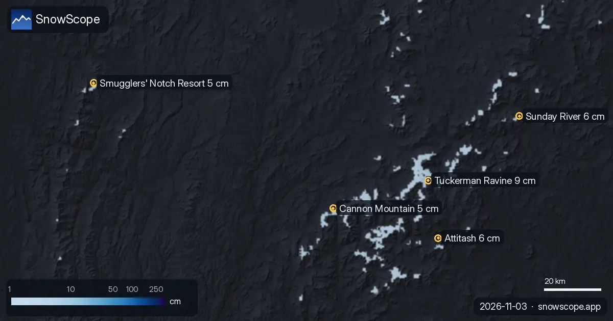

Noreste de EE. UU. desde el espacio: dónde ven nieve los satélites (3 de noviembre)
Nuestra capa de satélite guarda la última vista despejada de cada lugar, hasta el 3 de noviembre. Esto es lo que muestra en las estaciones con más nieve en el noreste de EE. UU..

Lo que ven los satélites
Los satélites vieron nieve a parches en Tuckerman Ravine el 27 de octubre, su último día despejado. En su último día despejado, el 30 de octubre, los satélites no vieron nieve en Attitash: quizá solo está en lo más alto o cayó después. En su último día despejado, el 27 de octubre, los satélites no vieron nieve en Sunday River: quizá solo está en lo más alto o cayó después. En su último día despejado, el 27 de octubre, los satélites no vieron nieve en Cannon Mountain: quizá solo está en lo más alto o cayó después. En su último día despejado, el 27 de octubre, los satélites no vieron nieve en Smugglers' Notch Resort: quizá solo está en lo más alto o cayó después.
| Estación | Espesor de nieve | Nieve nueva, 72 h | Previsto, próximos días | Cota máx. |
|---|---|---|---|---|
| Tuckerman Ravine | 9 cm | 0 cm | 0 cm | – |
| Attitash | 6 cm | 0 cm | 0 cm | 695 m |
| Sunday River | 6 cm | 0 cm | 0 cm | 955 m |
| Cannon Mountain | 5 cm | 0 cm | 0 cm | 1231 m |
| Smugglers' Notch Resort | 5 cm | 0 cm | 0 cm | 1112 m |

Dónde está la nieve hoy
Tuckerman Ravine (Estados Unidos) tiene hoy la nieve más profunda en el noreste de EE. UU., con unos 9 cm en las pistas altas. Le siguen Attitash con 6 cm y Sunday River con 6 cm.
15 de 111 estaciones en el noreste de EE. UU. tienen hoy nieve en las pistas altas, y nuestro modelo cuenta 360 km² de superficie nevada.
La superficie nevada pasó de 1050 km² el 1 de noviembre a 360 km² hoy, y nuestra previsión da 0 km² el 6 de noviembre.
Lo que miden las estaciones
Los satélites solo ven el suelo con cielo despejado, y una nieve fina entre árboles o rocas puede parecer a parches. Nuestro modelo cubre los días nublados; juntos dan una imagen fiable.
Las cifras de las estaciones de esquí son estimaciones del modelo para las pistas altas; las estaciones de medida miden en un punto, en la fecha indicada.
Consejos para esquiadores
- Busca la nieve en lo alto y en las laderas orientadas al norte: la guardan más tiempo; las orientadas al sur la pierden antes.
- Nieve en el mapa no significa que la estación esté abierta: consulta remontes y fechas de apertura en su web.
- La nieve de principio de temporada es fina. Quédate en pistas abiertas y pisadas: piedras y hierba están justo debajo.
- Activa una alerta de nieve polvo en la app SnowScope para saber cuándo Tuckerman Ravine recibe nieve nueva.
Sobre estas cifras
Los espesores de nieve de las estaciones son la nieve más profunda en las pistas altas según el modelo de nieve de SnowScope (unos 1 km, cálculo del 3 de noviembre); son estimaciones para una zona, no una medida en un punto. Los valores de las estaciones de medida son medidas en la fecha indicada. Las previsiones pueden cambiar. Consulta siempre el boletín oficial de aludes antes de salir fuera de pista.
Boletines oficiales de aludes: Mount Washington Avalanche Center
Más partes de nieve

Kope recibió 21 cm de nieve nueva en las últimas 72 horas. Ahora tiene unos 11 cm en las pistas altas, según nuestro modelo de nieve.

Donde más nieve hay en los Alpes es en Bonneval-sur-Arc: unos 55 cm en las pistas altas, según nuestro modelo de nieve. Después vienen Schnalstal …

Hasta el 6 de noviembre, nuestra previsión da 37 cm en Chabanon, 34 cm en Dévoluy y 33 cm en Chaillol. Las cifras de las estaciones de esquí son …